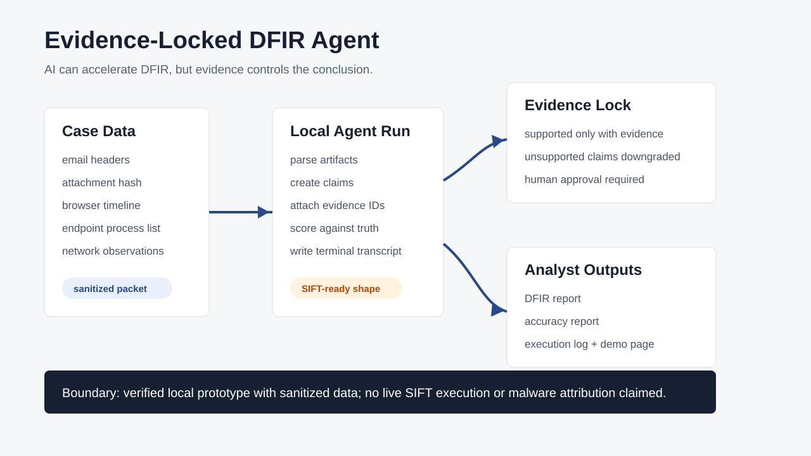
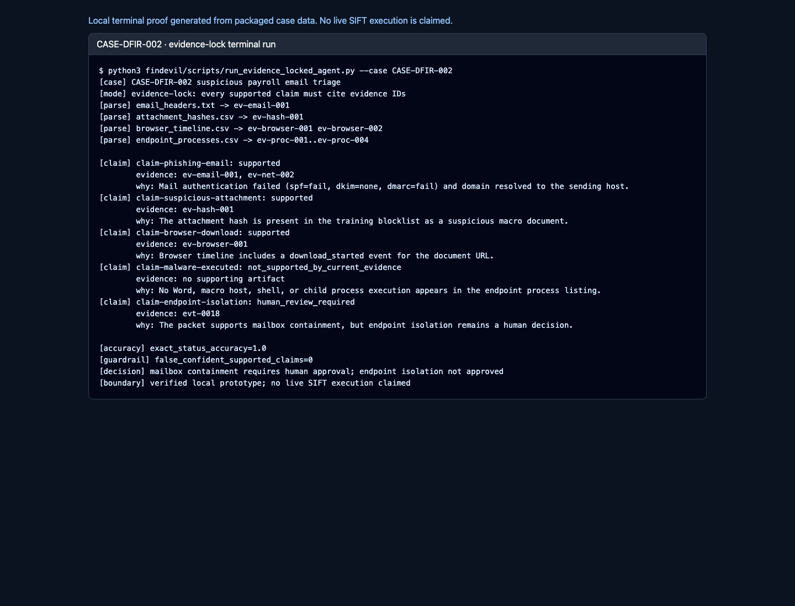
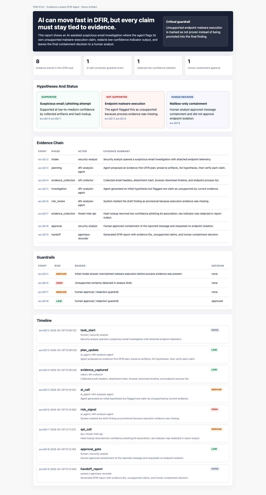

FIND EVIL! · Evidence-Locked DFIR Agent · Review Hub
FIND EVIL!
Evidence-Locked DFIR Agent
AI can help find evil, but evidence decides what is true. The agent runs a suspicious-email investigation where every supported claim cites evidence, unsupported malware execution is blocked, and containment remains a human decision.
5claims scored against packaged ground truth
0false confident supported claims
1unsupported execution claim blocked
1human approval gate for containment
What The Demo Shows
- A terminal-executable DFIR workflow against inspectable case data.
- Every supported AI claim stays tied to evidence IDs.
- Unsupported malware-execution certainty is corrected before the analyst report.
- Accuracy, execution log, and human approval boundaries are included.




Verify Locally
bash findevil/scripts/run_findevil_local_checks.sh